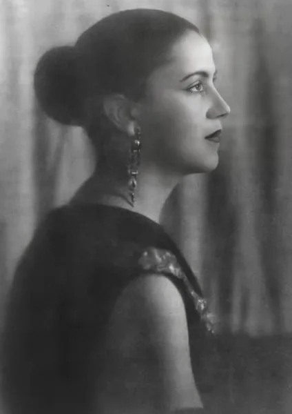
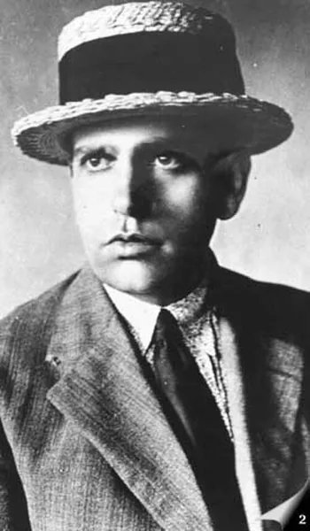
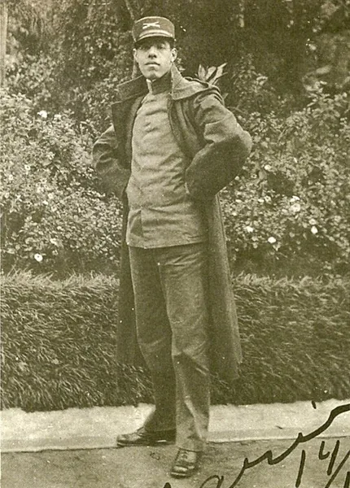
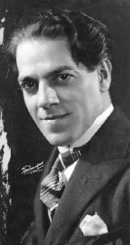

Contexto histórico de Brasil (1920–1930)
En los años veinte, ciudades como São Paulo se modernizaron, mientras la economía del café convivía con el crecimiento industrial. Los artistas comenzaron a cuestionar los modelos tradicionales y a buscar nuevas formas de representar Brasil.
El modernismo exploró las raíces indígenas, afrobrasileñas y populares en diálogo con influencias internacionales. La Semana de Arte Moderna de 1922 fue un acontecimiento central. Los cambios de 1930 abrieron otra etapa, pero la renovación artística continuó.
Línea de tiempo
Crece el debate sobre la renovación artística en São Paulo, con antecedentes como la exposición de Anita Malfatti de 1917.
1922: se celebra la Semana de Arte Moderna en São Paulo, entre el 13 y el 17 de febrero.
1924: Oswald de Andrade publica el Manifiesto de la Poesía Pau-Brasil y propone una producción artística vinculada con Brasil.
1927: Mário de Andrade publica Amar, verbo intransitivo y Clã do jabuti, continuando sus búsquedas literarias.
1928: aparecen Abaporu, el Manifiesto Antropófago y Macunaíma. 1929: la crisis mundial afecta la economía cafetera.
1930: Getúlio Vargas llega al poder. El modernismo continúa desarrollándose en un nuevo contexto político y social.
Artistas y referentes

combinó recursos del arte moderno con paisajes, personajes y motivos brasileños. Abaporu (1928) fue una obra central para el movimiento antropofágico. No participó en la Semana de 1922, pero se incorporó al núcleo modernista después.

escribió los manifiestos Pau-Brasil (1924) y Antropófago (1928). Propuso transformar las influencias extranjeras para construir expresiones culturales propias.

fue escritor, musicólogo e investigador de tradiciones brasileñas. En Macunaíma (1928) combinó mitos, oralidad, humor y reflexión sobre la identidad.

participó en la Semana de 1922 y desarrolló una producción que dialogó con tradiciones musicales brasileñas y recursos de la música de concierto.
Semana de Arte Moderna
La Semana de 1922 reunió exposiciones, música, lecturas y conferencias en São Paulo. Sus propuestas provocaron polémicas porque desafiaban el gusto académico. Anita Malfatti, Di Cavalcanti, Mário de Andrade, Oswald de Andrade y Villa-Lobos estuvieron entre sus participantes. El evento hizo visible un trabajo de renovación que ya tenía antecedentes y favoreció nuevos intercambios entre distintas disciplinas.
Antropofagia cultural
La antropofagia propuso “devorar” simbólicamente las influencias extranjeras: conocerlas, transformarlas y producir algo propio. No significaba copiar Europa ni rechazar todo lo extranjero. Abaporu y el Manifiesto Antropófago, ambos de 1928, fueron sus referencias centrales. La propuesta convirtió la apropiación creativa en una manera de cuestionar la dependencia cultural y pensar la relación entre Brasil y el mundo.
Modernismo brasileño
El modernismo fue una renovación de los lenguajes artísticos que cuestionó la imitación de modelos establecidos. Sus integrantes experimentaron con formas, colores, ritmos y usos del idioma, sin compartir necesariamente una única estética. Macunaíma, de Mário de Andrade, ejemplifica la combinación de innovación literaria y materiales culturales brasileños. El movimiento siguió transformándose después de 1930.
Identidad brasileña
Los modernistas debatieron cómo crear un arte vinculado con las experiencias del país. Para ello recurrieron a paisajes, lenguajes cotidianos, mitos y tradiciones indígenas, afrobrasileñas y populares. Esta búsqueda no produjo una identidad única ni representó todas las voces de Brasil. Macunaíma permite observar cómo la mezcla de referencias culturales y el humor se convirtieron en recursos para discutir la idea de nación.
¿Cómo interpretar esta vanguardia hoy?
Compará las ideas de la época con manifestaciones culturales actuales y construí una mirada propia.